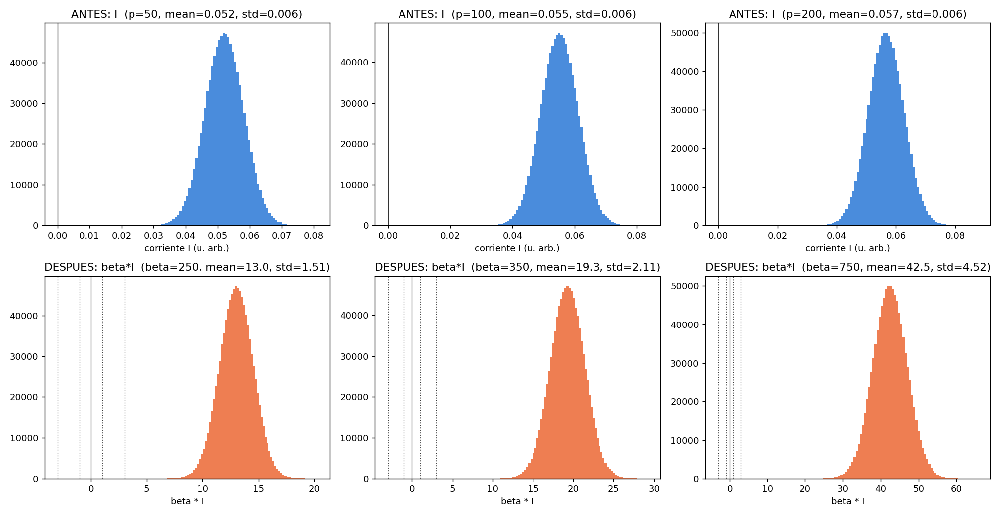
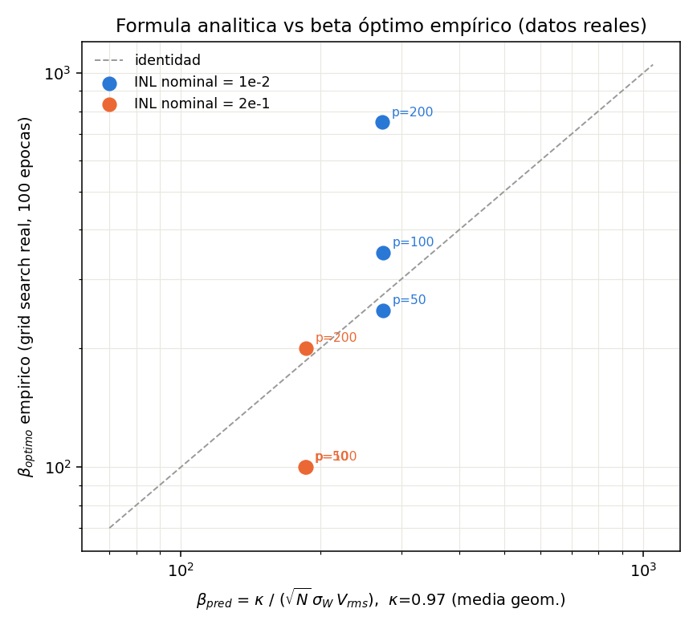
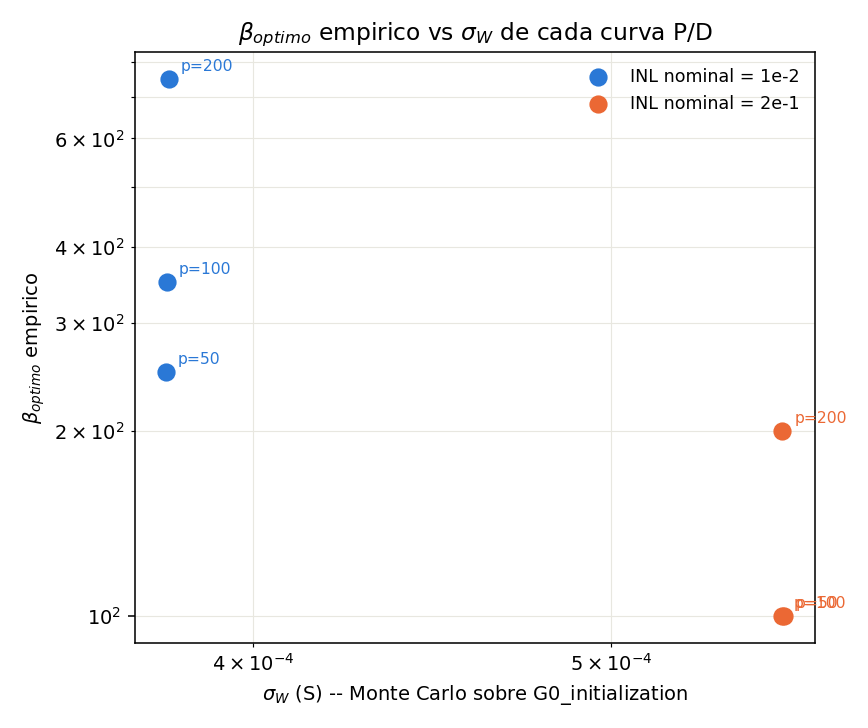
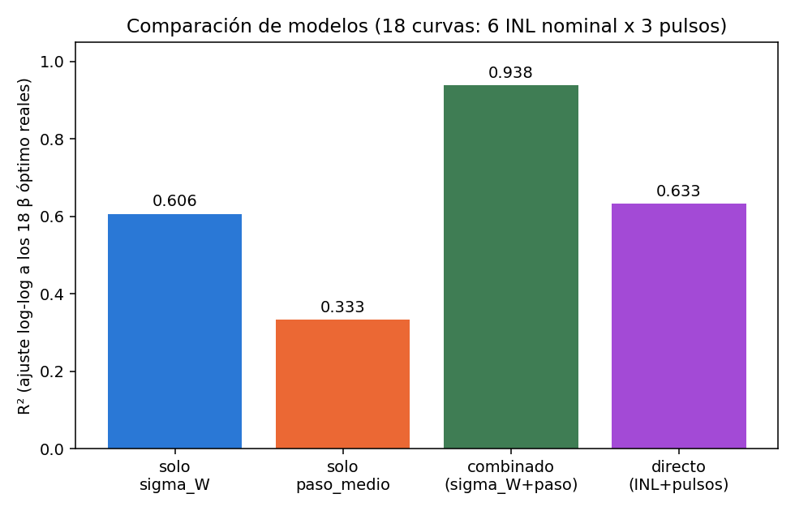
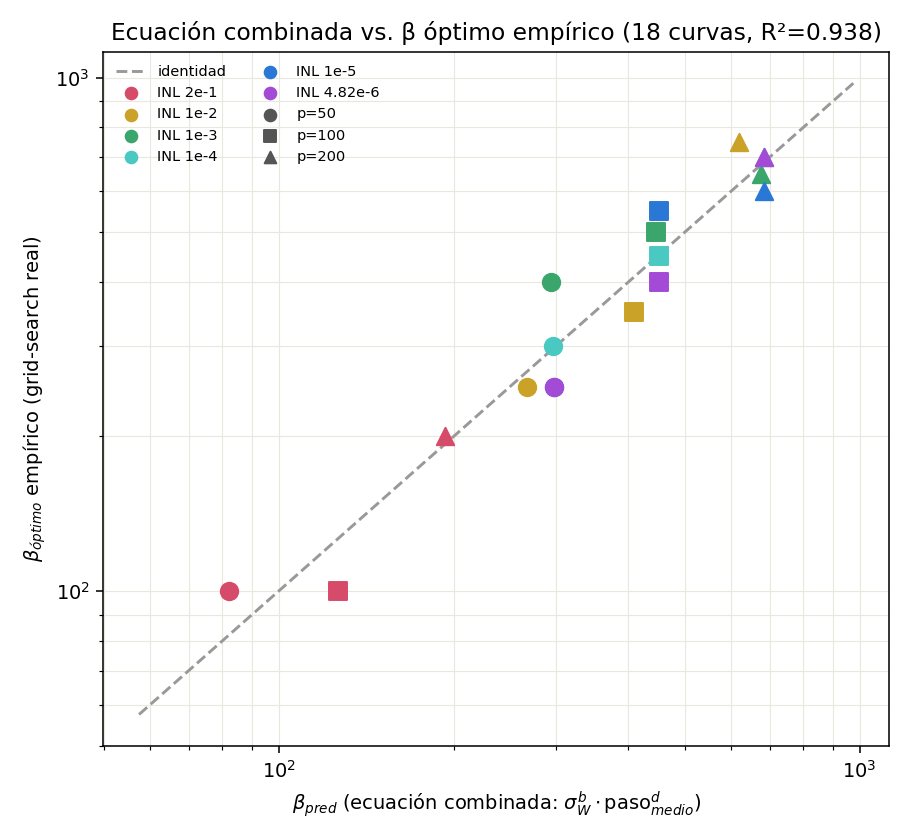
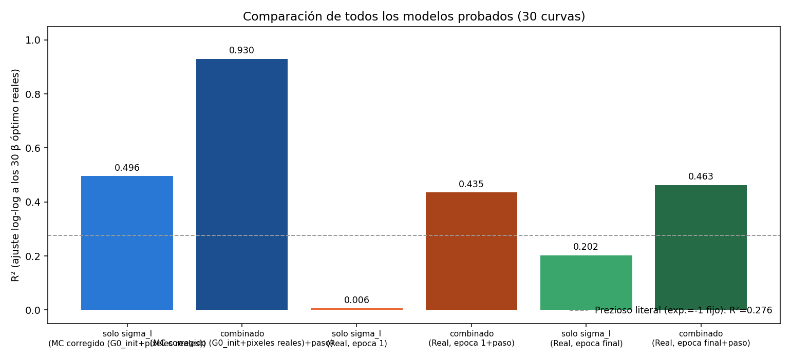
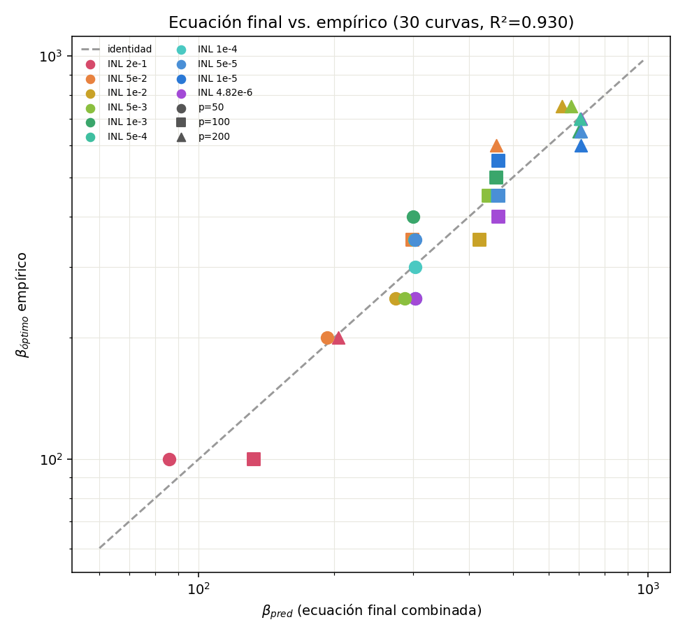
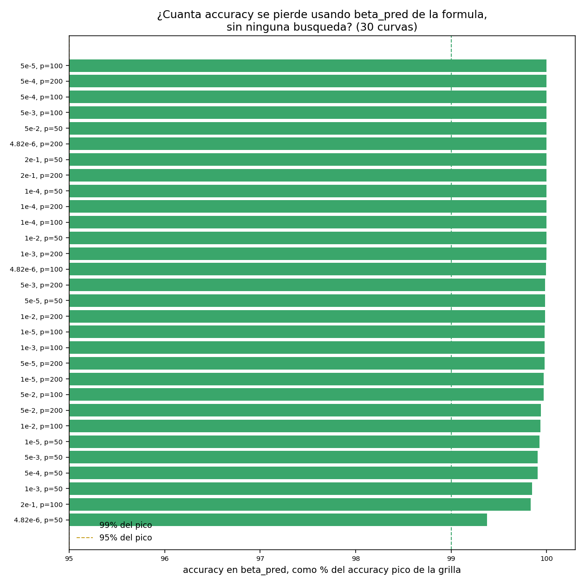

Síntesis del hilo de trabajo — de la idea original a un reemplazo validado del grid-search
softmax(β·I),
y elegir β por grid-search+K-fold es caro. Este proyecto encuentra una fórmula de dos
factores (σ_W, dispersión de pesos; paso_medio, granularidad de
la curva potenciación/depresión) que predice el β óptimo antes de entrenar, la
valida contra 30 grid-searches reales completos (R²=0.930), y la usa para reemplazar la
grilla ciega de search_best_beta() por una búsqueda angosta centrada en la
predicción — bajando el regret medido de 10.19 puntos porcentuales a 0.08.
En una red neuronal implementada sobre una crossbar memristiva, cada corriente de salida
I_i = Σ_j (G⁺_ij − G⁻_ij)·V_j pasa por una no linealidad
O_i = f(β·I_i) (softmax o tanh, según la capa). El valor de β determina si esa
no linealidad satura o queda demasiado chata, y el accuracy final de la red depende
fuertemente de él. El único método disponible en el código base para elegirlo,
search_best_beta(), es un grid-search con K-fold: cientos de entrenamientos
cortos por cada β candidato. La pregunta de este proyecto: ¿se puede estimar un β cercano
al óptimo sin entrenar nada, usando solo propiedades de la curva de
potenciación/depresión (P/D) del dispositivo memristivo?
Reporte_beta_optimo_analitico.pdf
(reporte previo del proyecto) deriva una fórmula candidata modelando la corriente como una
suma de N términos aproximadamente independientes (Teorema Central del Límite),
siguiendo el mismo esquema I=ΣW_ij·V_j, f=tanh(β·I) que
Prezioso et al. (Nature 521, 61, 2015) atribuyen a la recomendación de
LeCun et al. (Efficient Backprop, 1998):
con σ_W el desvío estándar de los pesos W=G⁺−G⁻ bajo la
inicialización aleatoria del código, V_rms el RMS de los voltajes de entrada
(píxeles de MNIST), y κ una constante O(1–10). Prezioso et al. no
publican la fórmula concreta que usaron; esta es una reconstrucción razonada del mismo
argumento.
analisis_beta_optimo.py (raíz del repo) fue el primer intento de poner a prueba
esta idea con un Monte Carlo de pesos y corrientes. analisis_corrientes_beta_optimo/
encontró que ese script tenía dos sesgos que rompían la premisa E[I]≈0 que
asume la fórmula: armaba los pesos como una matriz combinatoria pot[i]−dep[j] en
vez de sortear G⁺ y G⁻ independientemente (como hace la red real vía
G0_initialization), y muestreaba los voltajes de los valores únicos de píxel en
vez de respetar que el 81 % de los píxeles reales de MNIST son exactamente 0.

validacion_formula_beta_optimo/
puso la fórmula (κ=1) a prueba contra 6 grid-searches reales completos (100 épocas, 20
series, 5 folds cada uno) — no una búsqueda reducida. Resultado: acierta el orden de
magnitud (κ implicado ≈0.97, dentro de O(1–10)) y la dirección entre
ventanas de conductancia distintas (σ_W más grande ⇒ β óptimo más chico), pero
no explica la dependencia con el número de pulsos p de la curva P/D a INL
nominal fijo: β óptimo sube claramente con p mientras σ_W se mantiene casi
constante por diseño del experimento.


formula_beta_optimo_propuesta/
combina σ_W (predice la dirección entre ventanas de conductancia) con el
paso medio de la curva de potenciación, mean(|pot[i+1]−pot[i]|) (predice
la dirección con p), usando el Monte Carlo ya corregido:
| Modelo | R² |
|---|---|
| solo σ_W | 0.678 |
| solo paso_medio | 0.273 |
| combinado | 0.947 |


El propio reporte es explícito sobre el riesgo de sobreajuste con solo 6 puntos y 2 valores de INL — motivo por el cual el siguiente paso fue escalar la muestra.
reconstruccion_beta_optimo_18curvas/ y luego reconstruccion_beta_optimo_30curvas/ repiten el mismo método (sin reentrenar nada — Monte Carlo barato + reconstrucción determinista de logits ya guardados) sobre 18 y luego 30 curvas P/D reales (10 valores de INL nominal × 3 recuentos de pulsos). Los coeficientes se mantienen prácticamente idénticos al triplicar-y-medio la muestra:
| 6 curvas | 18 curvas | 30 curvas | |
|---|---|---|---|
| exponente de σ_I | −3.02 | −3.06 | −3.00 |
| exponente de paso_medio | −0.64 | −0.61 | −0.62 |
| R² (log-log) | 0.947 | 0.938 | 0.930 |


Más importante que el R²: para cada una de las 30 curvas se buscó, en la grilla real de 40 β ya corrida, el punto más cercano a la predicción de la fórmula, y se comparó su accuracy contra el pico real de esa curva completa. Las 30 de 30 curvas alcanzan ≥99 % de su accuracy pico (media 99.95 %, mínimo 99.38 %) usando la β predicha, sin ninguna búsqueda — a pesar de que el error puntual de la predicción llega hasta ±32 % en algunas curvas, porque el pico accuracy-vs-β es ancho (meseta) cerca del óptimo.

mejora_search_best_beta/
usa este resultado para reemplazar la grilla ciega de search_best_beta()
(en producción: solo 2 puntos, β∈{1,300}) por una grilla log-espaciada angosta, centrada en
la predicción de la fórmula, con expansión automática si el óptimo cae en el borde. Validación
empírica (10 corridas por método, 2 combos representativos, midiendo regret real contra
el ground truth de 100 épocas ya guardado):
| Método | regret medio | regret mediana | regret peor caso | tiempo |
|---|---|---|---|---|
| (a) original, como se usa hoy | 10.19 pp | 10.19 pp | 20.30 pp | 11.8 s |
| (b) original, defaults de fábrica | 0.24 pp | 0.03 pp | 2.16 pp | 118.2 s |
| (c) mejorado (fórmula + semillas controladas) | 0.08 pp | 0.04 pp | 0.45 pp | 218.2 s |
El método (a) —el que corre hoy en Crossbar_train_experimento_beta_por_capa.py—
elige β=1 en el combo más no lineal probado, perdiendo ~20 puntos porcentuales de accuracy
frente al óptimo real. Validado además contra los 30 combos completos (no solo los 2 de la
tabla): la fórmula predice el β óptimo real dentro de un factor 1.26× en el peor de los 30
casos (mediana del cociente predicho/real: 0.948; 100 % de los casos dentro de un factor
2×).
Los pasos 3–7 documentan la fórmula validándose contra evidencia real, siempre como código
nuevo que importa la clase base sin tocarla (ver Sección 13). Una vez validada la mejora de la
Sección 7 como un parche aparte (subclase MemDNNMejorado en
mejora_search_best_beta/search_best_beta_mejorado.py), se integró directamente en
la clase base MemDNN (MemCrossbarClass_beta_por_capa.py): un método
nuevo search_best_beta_mejorado() con las mismas fórmulas y correcciones (common
random numbers, grilla log-espaciada centrada en beta_pred_formula(), meseta
1-SE), y Crossbar_train_experimento_beta_por_capa.py ya lo usa por defecto cuando
optimize_beta=True, en vez del search_best_beta() original (que
queda en el archivo, sin uso por defecto). Es la única modificación al código base de
todo este hilo, y es posterior —y consecuencia directa— de la validación de las Secciones 4 a
7, no una premisa de ellas.
Tres estudios adicionales pusieron a prueba los bordes del resultado anterior: validacion_rango_conductancia/ (sensibilidad al ratio Gmax/Gmin), mejora_estimacion_beta_INL_2e1_a_1e3/ (reestimación en la zona de transición de INL) y reconstruccion_logits_val_INL_1e-2_p_100_beta1/ (sanity check: los logits reconstruidos por Monte Carlo coinciden con los logits reales guardados del entrenamiento). Ver el reporte de cada carpeta para el detalle — no se repiten aquí para no duplicar contenido que ya está documentado con su propia procedencia.
Progresión del ajuste a medida que creció la muestra y se corrigió el método:
| Paso | n curvas | Modelo | R² (log-log) |
|---|---|---|---|
| Validación fórmula analítica (solo σ_W) | 6 | β=κ/σ_W | 0.678 |
| Fórmula propuesta (σ_W + paso medio) | 6 | 2 factores | 0.947 |
| Reconstrucción, escala 3× | 18 | 2 factores | 0.938 |
| Reconstrucción, escala 5× | 30 | 2 factores | 0.930 |
N=784 (fan-in de MNIST); el
exponente teórico de N (N^(−1/2)) no se vuelve a poner a prueba con esta data.exploracion_beta_capa_oculta_100/,
fuera del alcance de esta entrega).
La fórmula β_óptimo ≈ C · σ_I^(−3) · paso_medio^(−0.6) (constante y exponentes
según la Sección 6) predice, sin entrenar nada, un β que alcanza ≥99 % del accuracy pico
en las 30 configuraciones reales disponibles, y usada para centrar search_best_beta()
baja el regret medio de 10.19pp a 0.08pp con un costo de cómputo despreciable frente a un
entrenamiento completo. Recomendación: usarla como pre-filtro barato antes de una
búsqueda angosta de verificación — no como reemplazo de la búsqueda en un solo paso sin
verificar, dado que sigue siendo evidencia sobre un único régimen (arquitectura SP, N=784,
MNIST, ratio Gmax/Gmin=10).
Cada carpeta del hilo (Secciones 3–7 y 9) tiene, en su propio reporte, una tabla
"registro de códigos usados" con: qué script es nuevo, qué función se importó sin modificar y
de qué archivo, y qué dato de entrada se usó. Esta página enlaza esas tablas en vez de
repetirlas. El código base (MemCrossbarClass_beta_por_capa.py,
Crossbar_train_experimento_beta_por_capa.py) no fue modificado por ninguno de
esos reportes de validación — la única modificación es la integración a producción descripta
en la Sección 8, posterior a toda la validación.